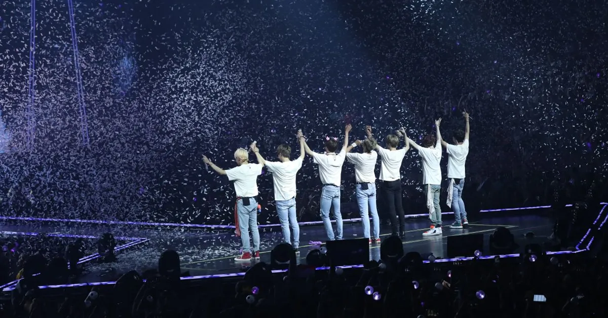

KPOP的重要
背景
「K-pop 是種由網路流進人們日常生活的文化。」
21世紀以來，韓國文化從亞洲圈迅速崛起，並排山倒海地席捲全球娛樂市場。其中韓劇的成功，奠定了韓流基礎，象徵全球化下語言與文化隔閡的破除。而接踵而至的 K-pop浪潮，更突顯韓國企圖以訓練有素及顏值為本的偶像軍團，透過不斷讓人耳目一新的包裝，將韓國價值與力量推上國際舞台。這是在上個世紀以西方主導話語權的環境下，前所未有、始料未及的壯舉，且繁盛的景況發展延續至今。
特性
「了解K-pop 演變，可以了解社會走向與時代演進。」
K-pop是豐富有趣的漫畫書，人人都可快速理解，產生共鳴，更可以是方便的電子書，隨手可得。
K-pop 是不斷創新的快時尚，領先潮流、超凡脫俗又象徵個人品味。
K-pop 是後現代的藝術畫，擁有舞台或螢幕上視覺搶眼的特質，與拼貼、多元文化的特性。
K-pop 是宗教，能凝聚粉絲群體的團結性，信仰核心是「偶像明星」，也造就了粉絲經濟的趨勢。
章節目標

Kpop為未來之趨勢，本網站欲透過兩方式的區分法，來辨別各個時代Kpop的特色與代表團體，協助讀者更認識Kpop韓團的起源與流變。
目前流行趨勢
| 依活躍時代分 | 依韓流白皮書分 |
|---|---|
| 第一代韓團 | 一代top組合 |
| 第二代韓團 | 一代top組合 |
| 第三代韓團 | 一代top組合 |
| 第四代韓團 |
依活躍時代分
目前新出道的韓團為第四代韓團，著重在網路平台的交流，也十分看重粉絲經濟，如 (G)I-DLE、STAYC、EVERGLOW、TREASURE、Stray Kids、Stray Kids、ITZY、aespa等等。
依韓流白皮書分
指的是韓國官方對韓流的認可，目前韓流依然是三代團的時代。男團為BTS，女團則為Twice。